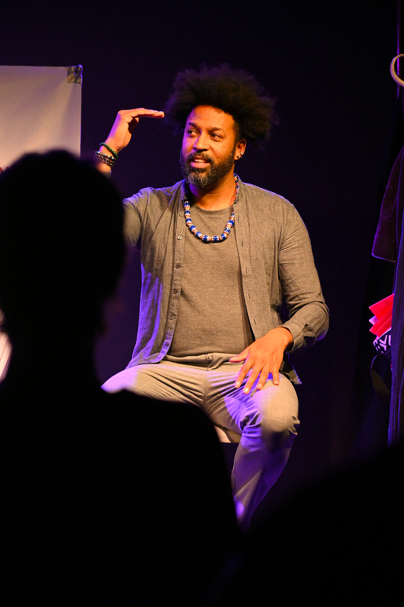

<!doctype html>
<html lang="fr">
<head>
<meta charset="utf-8">
<!-- Analytics + consentement cookies (RGPD) — GA chargé après accord, et uniquement en ligne -->
<script defer src="consent.js"></script>
<title>Pascal Antonio — intervenant masculinité & égalité</title>
<meta name="viewport" content="width=device-width,initial-scale=1">
<meta name="description" content="Pascal Antonio, intervenant en éducation populaire : 20 ans d'expérience pour déconstruire la masculinité dominante et promouvoir l'égalité femmes-hommes.">
<meta name="author" content="Pascal Antonio">
<meta name="robots" content="index, follow">
<meta name="theme-color" content="#EE3A7A">
<link rel="canonical" href="https://pascalantonio.fr/bio">
<meta property="og:type" content="profile">
<meta property="og:site_name" content="Pascal Antonio">
<meta property="og:locale" content="fr_FR">
<meta property="og:title" content="Pascal Antonio — intervenant masculinité & égalité">
<meta property="og:description" content="Intervenant en éducation populaire : 20 ans d'expérience pour déconstruire la masculinité dominante et promouvoir l'égalité femmes-hommes.">
<meta property="og:url" content="https://pascalantonio.fr/bio">
<meta property="og:image" content="https://pascalantonio.fr/assets/pourquoi-antonio.jpg">
<meta property="og:image:width" content="1280">
<meta property="og:image:height" content="1920">
<meta property="og:image:alt" content="Portrait de Pascal Antonio">
<meta name="twitter:card" content="summary_large_image">
<meta name="twitter:title" content="Pascal Antonio — intervenant masculinité & égalité">
<meta name="twitter:description" content="Intervenant en éducation populaire : 20 ans d'expérience au service de l'égalité femmes-hommes.">
<meta name="twitter:image" content="https://pascalantonio.fr/assets/pourquoi-antonio.jpg">
<script type="application/ld+json">
{"@context":"https://schema.org","@type":"BreadcrumbList","itemListElement":[{"@type":"ListItem","position":1,"name":"Accueil","item":"https://pascalantonio.fr/"},{"@type":"ListItem","position":2,"name":"Pourquoi moi","item":"https://pascalantonio.fr/bio"}]}
</script>
<link href="https://fonts.googleapis.com/css2?family=Archivo+Black&family=Anton&family=Bebas+Neue&family=Oswald:wght@400;700&family=Bricolage+Grotesque:wght@400;700&family=Instrument+Serif:ital@0;1&family=DM+Serif+Display:ital@0;1&family=Playfair+Display:ital,wght@0,400;1,400&family=Cormorant+Garamond:ital,wght@0,400;1,400&family=Inter+Tight:wght@400;500;600&display=swap" rel="stylesheet">
<link rel="icon" href="assets/favicon.ico" sizes="any">
<link rel="icon" type="image/png" sizes="32x32" href="assets/favicon-32.png">
<link rel="icon" type="image/png" sizes="16x16" href="assets/favicon-16.png">
<link rel="apple-touch-icon" sizes="180x180" href="assets/apple-touch-icon.png">
<link rel="manifest" href="site.webmanifest">
<link rel="stylesheet" href="shared.css">
</head>
<body class="theme-paper">
  <div id="root"></div>

  <script src="https://unpkg.com/react@18.3.1/umd/react.development.js" integrity="sha384-hD6/rw4ppMLGNu3tX5cjIb+uRZ7UkRJ6BPkLpg4hAu/6onKUg4lLsHAs9EBPT82L" crossorigin="anonymous"></script>
  <script src="https://unpkg.com/react-dom@18.3.1/umd/react-dom.development.js" integrity="sha384-u6aeetuaXnQ38mYT8rp6sbXaQe3NL9t+IBXmnYxwkUI2Hw4bsp2Wvmx4yRQF1uAm" crossorigin="anonymous"></script>
  <script src="https://unpkg.com/@babel/standalone@7.29.0/babel.min.js" integrity="sha384-m08KidiNqLdpJqLq95G/LEi8Qvjl/xUYll3QILypMoQ65QorJ9Lvtp2RXYGBFj1y" crossorigin="anonymous"></script>

  <script type="text/babel" src="tweaks-panel.jsx"></script>
  <script type="text/babel" src="tweaks.jsx"></script>
  <script type="text/babel" src="shared.jsx"></script>

  <script type="text/babel">
    function BioPage() {
      useCurtainTransitions("var(--pink)");
      useReveal();

      return (
        <>
          <SiteHeader active="bio" />

          {/* Hero with portrait */}
          <section style={{ background: "var(--pink)", borderBottom: "1.5px solid var(--ink)" }}>
            <div style={{ maxWidth: "var(--maxw)", margin: "0 auto", padding: "60px 32px", display: "grid", gridTemplateColumns: "1.4fr 1fr", gap: 40, alignItems: "end" }}>
              <div>
                <div className="eyebrow">Le conférencier</div>
                <h1 className="h-display" style={{ marginBottom: 24 }}>
                  PASCAL<br/>
                  <span style={{ background: "var(--yellow)", padding: "0 .1em" }}>ANTONIO</span>
                </h1>
                <p className="h-serif" style={{ maxWidth: "26ch" }}>
                  <em>Consultant indépendant, formateur en éducation populaire, conférencier gesticulant.</em>
                </p>
              </div>
              <div style={{ aspectRatio: "3/4", border: "1.5px solid var(--ink)", overflow: "hidden" }}>
                
              </div>
            </div>
          </section>

          {/* Bio body */}
          <section className="page reveal">
            <div className="col2">
              <div>
                <div className="eyebrow">Parcours</div>
                <h2 className="h-section">20 ans<br/>dans l'ESS<br/>et l'éducation<br/><span style={{ background: "var(--yellow)" }}>populaire</span></h2>
              </div>
              <div className="body-l">
                <p style={{ marginBottom: 18 }}>
                  Avec <strong>plus de 20 ans d'expérience</strong> dans l'économie sociale et solidaire ainsi que dans <strong>l'éducation populaire</strong>, j'exerce aujourd'hui comme consultant indépendant pour le cabinet Maracuja.
                </p>
                <p style={{ marginBottom: 18 }}>
                  Je soutiens les associations dans le montage de leurs projets et offre des <strong>formations sur les méthodes d'intelligence collective</strong> et les animations d'éducation populaire.
                </p>
                <p style={{ marginBottom: 18 }}>
                  Après avoir suivi une formation avec la coopérative d'éducation populaire <strong>l'Étincelle</strong> et collaboré avec <strong>Murielle Hachet</strong> pour la mise en scène, je propose depuis février 2025 cette conférence gesticulée sur la virilité et les masculinités.
                </p>
                <p>
                  <em>Mon objectif :</em> <strong>mettre toutes mes compétences au service de la lutte contre les discriminations de genre.</strong>
                </p>
              </div>
            </div>

            {/* Domaines d'intervention (anciennement dans Maracuja) */}
            <div style={{ display: "grid", gridTemplateColumns: "repeat(4, 1fr)", gap: 0, marginTop: 60, border: "1.5px solid var(--ink)" }}>
              {[
                ["Accompagnement", "Stratégies de développement"],
                ["Formations", "Intelligence collective"],
                ["Évaluations", "Capitalisation des projets"],
                ["Médiation", "Égalité femme-homme"],
              ].map(([k,v], i) => (
                <div key={k} style={{ padding: "24px 20px", borderRight: i < 3 ? "1.5px solid var(--ink)" : "none", minHeight: 160 }}>
                  <div className="eyebrow" style={{ marginBottom: 12 }}>{k}</div>
                  <p style={{ fontFamily: "var(--font-display)", textTransform: "uppercase", fontSize: 18, lineHeight: 1.1, letterSpacing: "-.01em" }}>{v}</p>
                </div>
              ))}
            </div>
          </section>

          {/* Photo strip */}
          <section className="page reveal">
            <div style={{ display: "grid", gridTemplateColumns: "repeat(3, 1fr)", gap: 16 }}>
              {["assets/pourquoi-1.jpg","assets/pourquoi-2.jpg","assets/pourquoi-3.jpg"].map((src,i)=>(
                <div key={i} style={{ aspectRatio: "4/5", overflow: "hidden", border: "1.5px solid var(--ink)" }}>
                  
                </div>
              ))}
            </div>
          </section>

          <SiteFooter />
          <PascalTweaks />
        </>
      );
    }

    ReactDOM.createRoot(document.getElementById("root")).render(<BioPage />);
  </script>
</body>
</html>
